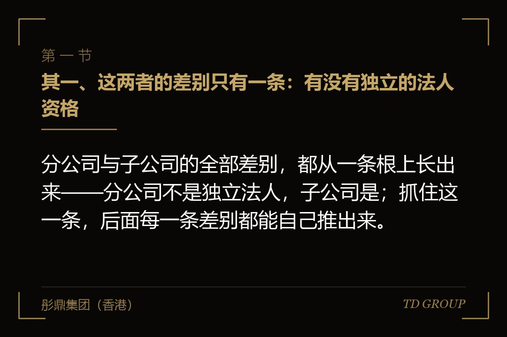
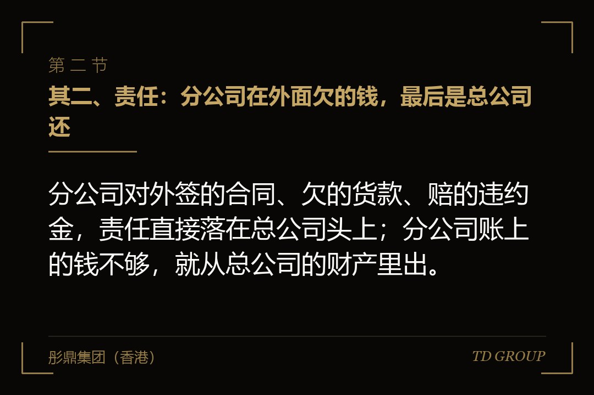
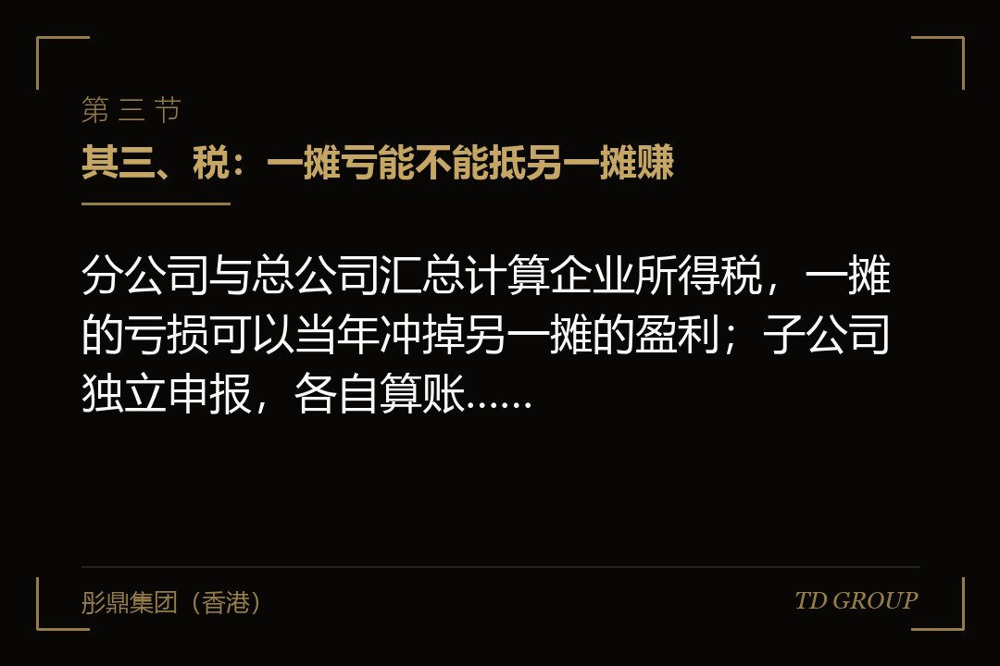

其一、这两者的差别只有一条：有没有独立的法人资格

结论先行：分公司与子公司的全部差别，都从一条根上长出来——分公司不是独立法人，子公司是；抓住这一条，后面每一条差别都能自己推出来。
打个比方。子公司像另外一个人，你只是站在他背后的股东，他自己签合同、自己欠钱、自己交税，你出的是那笔投资，赔到那笔为止。分公司更像你自己伸出去的一只手，手在外地干活，干出来的成绩和捅出来的窟窿，都算在你这个人身上。
这件事在营业执照上就看得出来。子公司那张执照写着注册资本、写着法定代表人；分公司那张上没有注册资本这一栏，签字的人叫"负责人"，执照上还会带着总公司的名字。少了注册资本这一栏，意味着它没有股本，也就没有股份可以分给任何人。
老板容易被误导的地方在日常观感：分公司也有营业执照、也有公章、也能开发票、也能招人、也能自己收钱付钱。看上去和一家公司没有区别，直到有一天需要它以"一家公司"的身份出现在某份文件上，才发现这个身份从来就不存在。
所以下面几节讲的责任、税、资质、报表、融资，不是彼此独立的条目，是同一条根上长出来的枝。本质上只要记住分公司不是一家公司，遇到没见过的场景也判断得出来——问一句这件事要不要一个独立主体来做，答案就出来了。
其二、责任：分公司在外面欠的钱，最后是总公司还

结论先行：分公司对外签的合同、欠的货款、赔的违约金，责任直接落在总公司头上；分公司账上的钱不够，就从总公司的财产里出。
前面那家做包装机械的公司在外地接过一个整线改造的单子，客户以产能没达到约定为由起诉索赔。起诉状上的被告不是外地那一摊，是总公司；后来被查封的账户，也是总公司在本部开的那个基本户。老板当时的原话是，我以为那边的事就烂在那边。
子公司这一头是另一套逻辑：它自己的债它自己还，股东出了那笔出资就到此为止。这就是所谓的有限责任，也是子公司真正值钱的地方——把一块风险高的业务放进一家独立公司，出事的时候那道墙能挡住。
但那道墙不是注册出来的，是维护出来的。三种常见情形能把它打穿：母公司为子公司的借款或者履约做了担保，这时候责任是自己写进去的；两家公司人财物混在一起，一套人马两个牌子、钱在一个池子里进出、合同盖哪个章看当时手边有哪个；以及注册资本认了却一直没实缴，公司又还不上到期的债。
所以关键在于，选子公司只是拿到了那道墙的资格，能不能真挡住，要看后面几年账怎么记、章怎么用、钱怎么走。反过来说，分公司连这个资格都没有，无论把外地那一摊管得多干净，责任照样回到总公司身上。
其三、税：一摊亏能不能抵另一摊赚

结论先行：分公司与总公司汇总计算企业所得税，一摊的亏损可以当年冲掉另一摊的盈利；子公司独立申报，各自算账，亏的那家只能自己往后年度慢慢补。
这是分公司真正的好处，别一笔抹掉。假设有家做空压机的公司去外地开一摊，头两年一定亏——房租、人、样机、挤进当地供应商名录都要花钱。分公司形态下，这两年亏出来的数当年就冲减了总公司的应纳税所得；换成子公司，这笔亏损留在它自己账上，要等它以后自己赚回来才用得上，而这中间还有个年限。
反过来，赚钱之后的账要算另一头。子公司挣的钱要分给股东，就多出一次分红动作；居民企业之间符合条件的股息通常有免税待遇，而钱要落到老板个人手上那一层，仍然要按个人所得的规则交一次。分公司没有分红这个动作，因为它的利润本来就是总公司的利润，不存在往上分的问题。
有一点常被误解：分公司不是"不用在当地管税"。它通常要在当地办税务登记、开自己的发票、就地预缴一部分企业所得税，增值税也多在当地申报，员工的个税与社保同样在当地缴。省掉的是独立汇算这件事，不是当地那一整套手续。
这一节涉及的税种、比例与年限，各地执行口径不完全一样，也会变。做方案时不要照抄某年某地的做法，一律以当时有效的税收法规和主管税务机关的口径为准。要点是把方向记住：早期亏损期分公司占优，等到要分钱、要引资，天平就倒向子公司。
其四、资质与招投标：门口那道闸只认独立主体
结论先行：资质、许可、投标资格与当地招商政策，绝大多数是发给独立法人的；分公司只能挂在总公司的证上，总公司那边出问题，外地这一摊一起停。
建筑施工、检测、危险化学品经营、医疗器械经营这一类许可，通常发给法人主体。分公司要在当地干活，多数只能在总公司的证下面做备案或者延伸执业，能干的范围、有效的年限都跟着总公司走。总公司的证被降级或者暂停，外地这一摊当天就没法开工。
招投标那道闸更直接。不少项目的招标文件会写明投标人须为独立法人，或者要求提供投标主体近几年的审计报告、在当地的纳税记录、独立的资产负债表。分公司拿不出这几样——它没有自己的审计报告，也没有自己的股东权益。
假设有家做食品机械的公司，在外地以分公司形态做了两年。等到当地一个园区的整线项目公开招标，资格预审那一轮就被退了回来，理由是投标人不具备独立法人资格。那一年丢掉的收入，比当初省下的注册与合规成本大了两个数量级。
还有一头是当地给的好处。园区扶持、设备补贴、人才政策、产业基金配套，多数按"注册在本地的独立纳税主体"来给。分公司在当地缴了税，却常常因为主体不在本地而对不上申报条件。因此定形态之前，值得把当地那份政策文件先读一遍。
其五、账、发票和银行账户：看着能独立，实际上独立不了
结论先行：分公司可以有自己的账户、自己的发票、自己的一套账，但那套账不是一份能单独拿出去看的报表——它年末要并回总公司。
分公司的账套在会计上是总公司账的一部分。它可以按月出内部报表给老板看这一摊赚了多少，但它没有独立的股东权益，也不会有一份以它自己名义出的审计报告。凡是要看"这家公司过去三年的财务报表"的场合，它都交不出东西来。
银行这一头最能体现区别。分公司可以开结算账户、可以走流水，但真要一笔额度大些的授信，银行通常要总公司做借款人或者担保人，额度也算在总公司名下，占的是总公司的信用。外地那一摊自己攒下来的还款记录，很难变成它自己的信用。
假设那家包装机械公司的外地分公司想单独申请一笔流动资金贷款，理由很充分：这一摊自己有订单、有回款、有设备。银行看完之后的答复是要看主体报表，最后还是总公司借、总公司担保，把总公司在这家行的额度占掉了一大半。
这一层的后果不只是麻烦。融资、并购、上市的每一道流程都建立在"以主体为单位看报表"这个前提上，中介和投资人的模型也是按主体搭的。一块业务没有自己的主体，就永远只能作为别人报表里的一段说明出现，而不能自己成为一个标的。
其六、融资和上市这一步：分公司发不出股份
结论先行：投资人要买的是股权，而分公司没有股权可发；要单独引资、单独做激励、单独装进上市主体，头一件事都是先把它变成一家公司。
投资人真正要的是三样东西：工商登记上的股东身份、章程与协议里写明的那几项权利、将来能转让出去的那块股权。这三样，分公司一样也拿不出来。谈得再顺，走到签协议那一步就会停下——协议的另一方在法律上不存在。
股权激励也一样。要给外地团队发期权，只能发总公司的股权，稀释的是老板在整个公司的比例；而那几个人做的是外地那一摊的业绩，凭什么去分总部老业务的利润，这件事在谈判桌上几乎必然吵起来。子公司形态下，激励就落在那一摊自己的股权上，谁的贡献分谁的池子。
装进上市主体那一步，两者的路长得不一样。子公司只要控股关系清楚、报表并得上，通常就是合并范围里的一员；分公司要先转成公司，而新主体的成立日期、许可证的取得日期、业绩能不能连续计算，全部从转过去的那一天重新起算。
申报口径通常要求报告期内的业绩连续可比。一块业务从分公司搬进一家新设公司，中介照例要问：这块业务的历史业绩记在谁名下、新主体成立不久拿什么证明它的连续性、搬迁那一年的报表怎么衔接。答不好，就是把时间表往后推一年。
其七、已经选错了怎么改：这条路越晚走越贵
结论先行：分公司转子公司不是改个名字，是把资产、合同、人员与资质从一个主体搬到另一个主体，每一样都要重新走一遍流程。
动作大致是这样：先新设一家公司，把分公司名下的设备、存货、在建工程、房产或者租约逐项划过去；客户与供应商合同一份份换签，或者签三方转让；员工的劳动关系要么解除再入职、要么协商变更用人单位，工龄要接续，社保与公积金要转移。
最难的一样往往不是资产，是资质与许可。新主体要从头申请，有的要现场核查，有的对成立年限、人员数量、过往业绩有要求。等证的那几个月里，业务是不是要停、老单子能不能继续履行，都得提前安排好。
税这一头也要单独算。资产从总公司划到新设的子公司，那一下在税上按转让处理，涉及哪些税种要逐项去看——所得、增值税，以及不动产相关的那几项都可能沾上。这笔钱与那一摊现在值多少钱直接相关，具体处理以当时有效的税收法规和主管税务机关的口径为准。
越晚越贵是两条曲线叠出来的。那一摊越赚钱，划转时按公允价值算出来的数就越大，税跟着往上走；同时客户合同越多、员工越多、资质年限越长，搬一次的摩擦就越大。前面那家包装机械公司第二年才动手，前后花了七个月，卡最久的是一张要求申请主体成立满两年的资质。
其八、什么时候分公司其实是对的
结论先行：分公司不是坏东西，它适合那些不打算单独融资、不需要独立持证、早期又注定要亏的摊子——办事处、门店、区域仓、售后网点都算。
三种情形下分公司更合适。其一是这一摊只是把总部的业务延伸出去，销售、售后、仓储、施工现场，本身不构成一个独立的生意闭环；其二是预计头两三年要亏，用汇总纳税把亏损当年就用掉；其三是要快要省，几个人的办事处不值得养一整套独立主体的合规成本。
独立主体的成本是持续的，容易被低估：单独记账、单独年报、单独税务申报、单独的社保开户，规模大一点还要单独审计。一个几百万营收的销售点，一年在这上面花的钱和精力，未必比省下来的税少。
判据可以压成一句话：这一摊将来会不会有人想单独投它、单独买它，或者要它自己去投标、自己去持证？三个问号里只要有一个答"会"，就用子公司；三个都是"不会"，分公司省事又省税。
落地的顺序也和多数人做的相反。先问会不会单独引资，再问要不要独立资质与投标资格，再问头两三年是赚是亏，再问将来会不会装进上市主体，最后才去办注册。注册那一步只要半天，前面那四问要是没想过，代价会在三年后一次性到账。
华尔街彤鼎俱乐部的一次闭门交流上，有位在四个省份都开过摊子的企业主提到一句，他现在的做法是先按"这一摊将来会不会有人来买"分类，会的一律新设公司，不会的一概挂分公司。
以上为一般性的规则梳理，不构成法律、税务或投资意见。具体形态的选择、办理要求与税务处理，应由具备相应资质的律师与税务师按个案出具意见，并以当时有效的法规和属地主管机关的口径为准。